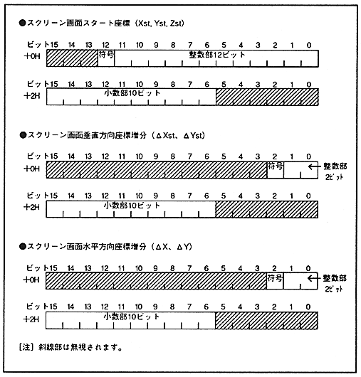

Return to previous page
｜
Return to menu
｜
Go to next page
It does not have to be stored in
, but only stores the rotation parameter table used by RBG0 and RBG1.
■ Rotation parameter table data structure
Figure 6.2 shows the bit configuration of each rotation parameter. Negative numbers are specified in 2's complement. The shaded bits are ignored.
Figure 6.2 Data structure of rotation parameters

Return to previous page
｜
Return to menu
｜
Go to next page